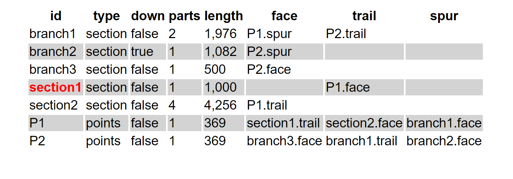
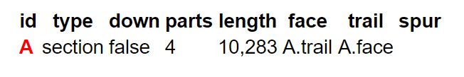
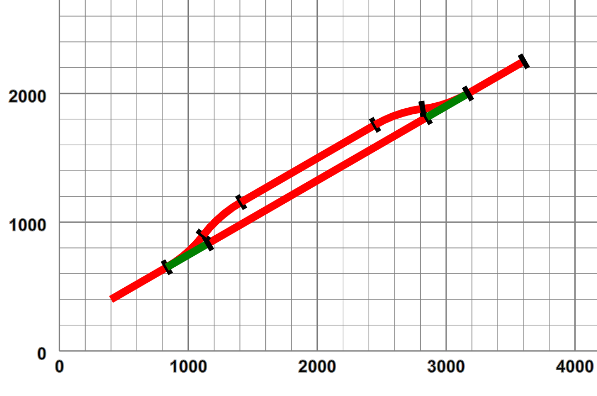
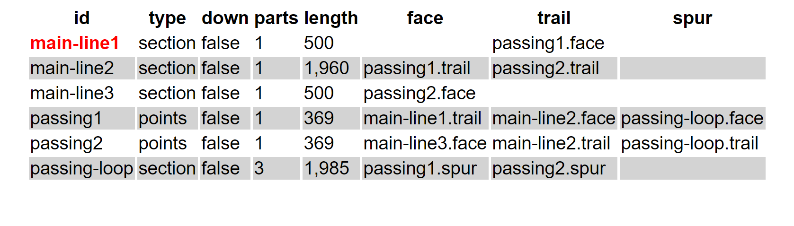
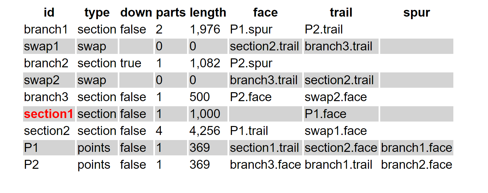

Representing the topology
If we want to use a layout for any purpose other than design (such as interactive animation), we don't just need the geometry of the layout: we also need to represent the topology — which sections are joined when points are in a given state? If a train leaves one section, which is the one it will enter, if any? To do this we represent contiguous sections of track and points as components with two or three ports:
- face
The port which faces against an oncoming vehicle in normal travel, i.e. trains usually start from the face port. For points this is the entry from which the exit track (trail or spur) depends upon the state of the point.
- trail
The port from which a vehicle emerges in normal travel, i.e. trains usually end a section leaving the trail port. For points entered in the normal switched direction this is the exit when the point is not set.
- spur
Only defined for points, the exit port when the point has been set [17].
Using these definitions we can describe the topological relations between component sections in a simple map:
Figure 6. Topology of a two-point layout
|  |
This map has an entry for each component describing its type and its port connections in terms of a component/port pair to which
that port attaches. Note however that branch2 (the “backward” spur from point
P2) is labelled down=false. This means that the “main” direction (i.e. proceeding
from P2 along branch2) of that section of track is in a reversed sense to the rest of the
layout — the importance of this will become apparent later.
Thus far we have a layout that has no loops or paths of multiple connection, and whilst totally representable by a tree is not completely useful, especially if one wants to leave a train running around the layout indefinitely. Suppose we have a simple oval loop:
Figure 7. An oval becomes a loop
 |
which starts at 2000,1000, and loops back through two straights and two curves to an end point co-incident in position and orientation with the start. To “close the loop”, we have to convert our tree to a graph, in this case with “self-pointers” by adding a specific link directive
Example 4. Describing a graph linkage
<layout name="oval" start="A">
<start x="2000" y="1000" orient="20"/>
<straight name="A" length="2000"/>
<curve r="1000" angle="180"/>
<straight length="2000"/>
<curve r="1000" angle="180"/>
<link>A.trail A.face</link>
</layout>|  |
Now a vehicle finishing at A.trail can proceed happily into A again through A.face and similarly in a reverse direction. Of course in this case we could infer from the geometrical co-incidence that such a link may be required, but sometimes the geometry isn't quite accurate enough. Here is a passing loop:
Example 5. A passing loop
<layout name="passingLoop" start="main-line1">
<start x="400" y="400" orient="30"/>
<straight name="main-line1" length="500"/>
<point id="passing1" radius="small" turn="left">
<spur>
<curve name="passing-loop" r="1000" angle="-22.5"/>
<straight length="1200"/>
<curve r="1000" angle="-22.5"/>
</spur>
</point>
<straight name="main-line2" length="1960"/>
<point id="passing2" radius="small" dir="trailing" turn="right"/>
<straight name="main-line3" length="500"/>
<link>passing-loop.trail passing2.spur</link>
</layout>Where now we have specifically linked the passing loop component onto the trailing point spur:
Figure 8. Passing loop graphically and topologically
|  |
|  |
But linking isn't quite as straightforward. Suppose in our earlier example we consider the “small gap” between section2 and branch3 is joinable, and we specifically add a link declaration:
Example 6. Linking arbitrary branches
<layout name="twoPointsLinked" start="section1">
<start x="400" y="400" orient="30"/>
...
<point id="P1" radius="small" turn="left">
<spur>
...
<point id="P2" radius="small" dir="trailing" turn="left">
<spur>
<curve name="branch2" r="400" angle="155"/>
</spur>
</point>
<straight name="branch3" length="500"/>
</spur>
</point>
<curve name="section2" r="1500" angle="-45"/>
...
<curve r="500" length="1400"/>
<link>section2.trail branch3.trail</link>
</layout>This link introduces a requirement for a “polarity shift” — a locomotive proceeding forwards from section2 would find itself running in the reverse direction in branch2. To permit smooth continuous operations, our “cyber-locomotives” have a “running in the wrong-direction” property (which is xored with reverse), and when similar ports are connected with similar “down-line” properties, a dummy swap component is inserted in the link, which will invert this property as a vehicle transits[18]:
Figure 9. Swapping direction across links.
|  |
(swap1 and swap2 could in theory be the same, but the implementation is easier to use one for each direction, and the additional cost minimal.)
[17] In theory an engine entering a set of points from the trail or spur direction, when the points are set against that direction, i.e. when set from trail or not set from spur, may be able to “force” an automatic points switch, but this is not recommended practice.
[18] Such an issue is faced by two-rail electric power systems on railways with such “re-entrancy”